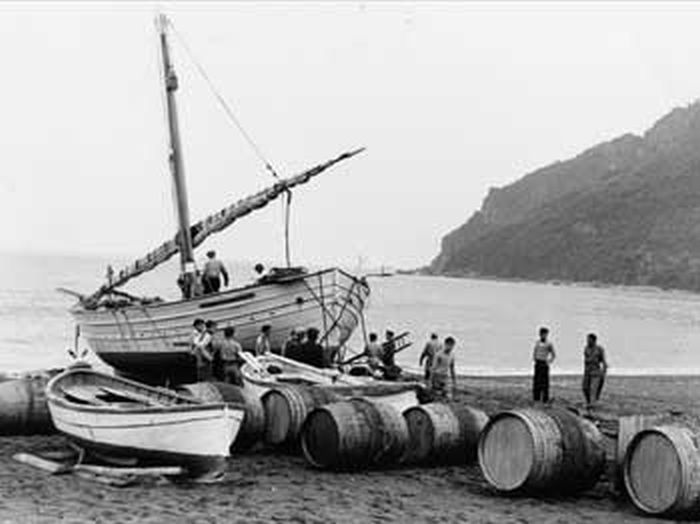
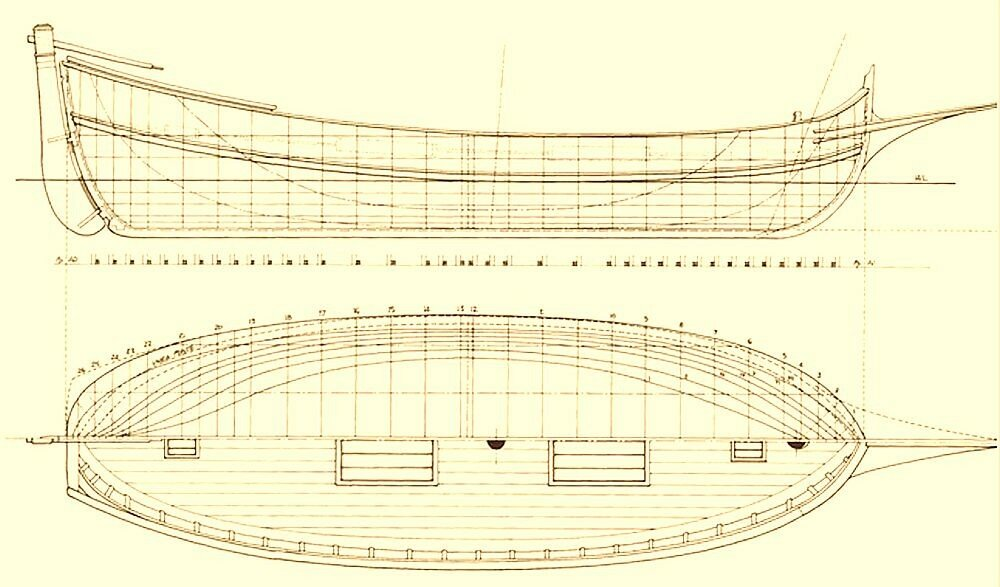
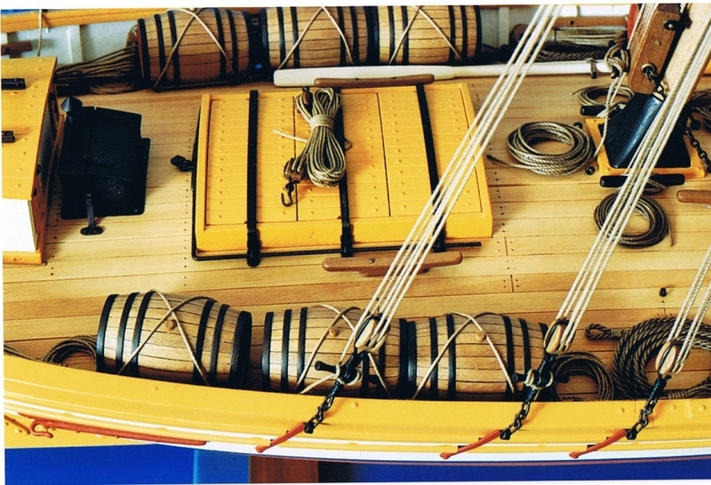
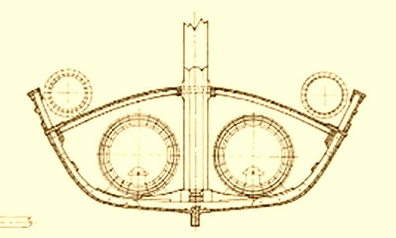
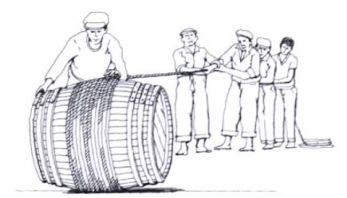
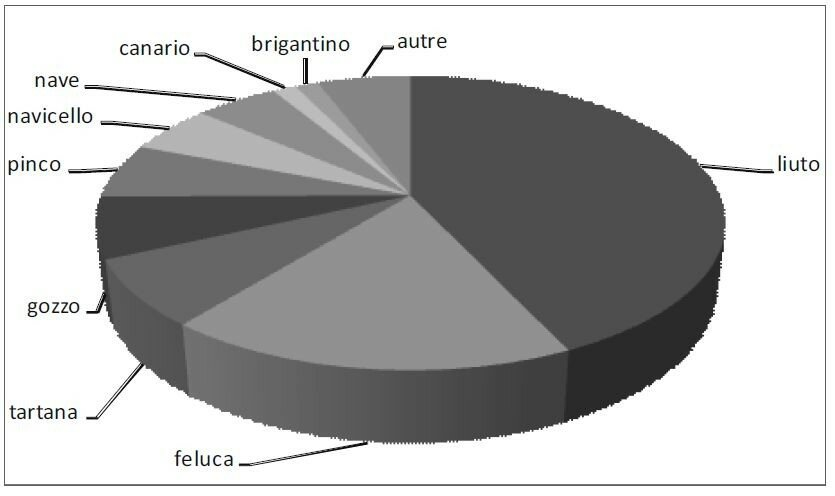

Леудо: виновоз и не только
― Тогда будем знакомы, ― сказал незнакомец, приподнял обеими руками над головой каскетку и снова положил ее на лысую голову. ― Аристарх Липогон, бывший каботажный шкипер. Врожденный моряк.
К. Г. Паустовский. Повесть о жизни. Беспокойная юность

Фотография леудо-виновоза. Фото Edoardo Bo.
Про леудо написано значительно больше, чем про другие суда того типа, который мы сейчас рассматриваем. Лигурийские берега, Ривьера являются свидетелями каботажных плаваний этого корабля вплоть до наших дней. Леудо, несомненно, типично лигурийский корабль, но границы его распространения значительно шире. Более того, впервые это судно упоминается в каталонских документах (laüt 1249 г., leut 1354 г., leüt 1356 г. и множество упоминаний в последующие годы). Затем записи о нем появляются в документах Прованса (первая в 1357 г., сначала в латинизированной форме "laudus"). Первое же появление термина на итальянском языке отмечается в Генуе в 1402 году. Затем леудо встречается в венецианском трактате "Fabrica di galere" (первая четрверть XV века), который мы цитировали уже неоднократно. О размерах леудо той поры можно судить по записи в статутах Officium Gazariae за 1441 год. Там перечисляются плавсредства, которыми должен быть обеспечен парусный корабль ("nave o cocca") грузоподъемностью двадцать тысяч кантари (950 тонн), а именно "barcha", "laudo" и "gondora". Леудо имеет мачту, весла и парус (“qui laudus habeat arborem et vellum cum suis remis atersatis…”). В другом документе (за 1445 год) указывается длина леудо – 11,6 м (в метрических единицах).
Целый ряд специалистов полагает, что термин леудо произошел от арабского العود (al-'oud), который в основе своей значит «дерево», ствол, а в историческом развитии и музыкальный инструмент – лютня. Многое могло бы подтвердить истинность этой гипотезы, и не в последнюю очередь – первое появление термина леудо в Иберии. Но имеется одно замечание, которое перевешивает все аргументы «за»: у арабов аль-‘ауд никогда не обозначал никакого судна в ту эпоху, когда термин этот начал свое шествие с запада на восток.
Есть еще одна группа историков (в их числе Carlo de Negri), которая полагает, что итальянские термины lembo, liuto и leudo эквивалентны, они обозначали одно и то же судно. Однако при переходе от лингвистики к характеристикам реальных судов эта гипотеза распадалась в прах.
Несомненным остается факт, что в XV веке слово леудо могло относиться как к приданному крупному кораблю (например, флорентийской торговой галере в 1429 году) служебному плавсредству, так и к малому судну каботажного плавания. Оно было снабжено как парусом, так и веслами, причем максимальное число гребцов, которое можно найти в документах той эпохи, достигало двенадцати человек. К началу XVII века размеры леудо существенно выросли, некоторые из них имели уже две мачты. Известный нам Пантеро Пантера характеризует их (наряду с барками и баркасами) как суда, несущие две мачты – грот-мачту и фок-мачту: «le barche, le barcacce ed i leudi sono vascelli, che portano due vele, la maestra ed il trinchetto.» Вслед за Пантерой описание леудо (liudo) мы встречаем у архитектора из Ульма Йозефа Фуртенбаха в трактате «Architectura navalis» (1629): это такое же судно, как и фрегат, только короче. Несколькими абзацами выше Фуртенбах описывает фрегат как судно длиной около 10 м, имеющее две мачты с латинским вооружением. По мнению ульмского архитектора, который несколько лет провел в Италии, liudo имел также по 4-5 весел с каждого борта. (Впрочем, не исключено, что в XVII веке леудо и лиуто были два различных судна.)
Ближе к нашим временам – в конце ΧΙΧ- начале ΧΧ в.–леудо принял установившиеся размеры (длина 15-16 м при ширине около 5 м) и форму. Отношение длины к ширине 3:1 было типичным для средиземноморских грузовых судов с давних времен и твердо соблюдалось.
Леудо имел меньшую высоту борта и глубину трюма, чем это было принято на классических судах: высота его пиллерса вместо половины длины бимса составляла всего одну треть.

Чертеж корпуса леудо.
Характерной особенностью была также заметная погибь палубы, величина отношения стрелы прогиба к ширине корабля достигала 1:8, что существенно превышало подобные характеристики других судов сопоставимых размеров. Две мачты с латинским вооружением и бушприт были съемными.
С другими характеристиками леудо можно познакомиться в статье, ссылку на которую я давал в прошлый раз.
По назначению леудо делились на несколько групп, главными из которых были суда для перевозки песка и суда-виновозы. В последнем случае большие бочки с вином помещались в трюм, а бочки поменьше – на палубу.

Фото модели леудо с сайта www.anvo.it

Сечение корпуса леудо-виновоза.
На фотографии, приведенной в начале поста, мы видим, что каждая бочка с вином была обмотана тросом. Это не случайная деталь, а конструкция, помогающая перемещать тяжелые бочки по земле.

Были также леудо, специализирующиеся на перевозках сыра. В этом случае грузовом трюме делали полки для этого продукта. Но все же в общем случае это были универсальные суда каботажного плавания между побережьем Италии, островами Эльба и Сардиния и берегами Испании , которые брались за перевозки любого груза, предложенного клиентом.
Возможно, покажется странным, что мы уделяем так много внимания этому небольшому, в сущности, суденышку. Но давайте взглянем на статистику посещений порта Генуи в 1770 году.

Корабли, посетившие порт Генуи в 1770 году. Распределение по типам. Источник Silvia MARZAGALLI (2012).
Безусловно первое место занимают в этом ряду леудо (liuto), которые опережают даже такие популярные в тот период суда, как фелюги и тартаны.
Продолжим в следующий раз.